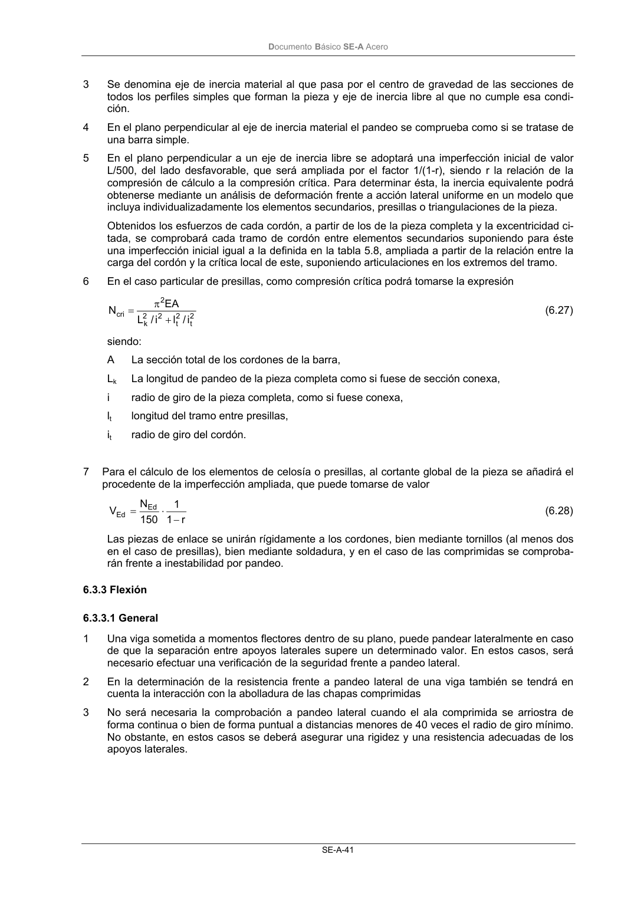

DB-SE-A Acero · edición 2007-10-23 · capa oficial
Documento DB-SE-A-oficial · SHA-256 del PDF 9ed9ea694aabfbda3bfbbef40dfe9223fde05d13c35bc2ba9751e5a96a22a64f
Página física 43 de 168.
Copia fiel del PDF fuente · Fuente oficial
Ficha de la disposición en la fuente oficial
Formato: Texto de la página (Markdown)
Documento Básico SE-A Acero SE-A-41 3 Se denomina eje de inercia material al que pasa por el centro de gravedad de las secciones de todos los perfiles simples que forman la pieza y eje de inercia libre al que no cumple esa condi- ción. 4 En el plano perpendicular al eje de inercia material el pandeo se comprueba como si se tratase de una barra simple. 5 En el plano perpendicular a un eje de inercia libre se adoptará una imperfección inicial de valor L/500, del lado desfavorable, que será ampliada por el factor 1/(1-r), siendo r la relación de la compresión de cálculo a la compresión crítica. Para determinar ésta, la inercia equivalente podrá obtenerse mediante un análisis de deformación frente a acción lateral uniforme en un modelo que incluya individualizadamente los elementos secundarios, presillas o triangulaciones de la pieza. Obtenidos los esfuerzos de cada cordón, a partir de los de la pieza completa y la excentricidad ci- tada, se comprobará cada tramo de cordón entre elementos secundarios suponiendo para éste una imperfección inicial igual a la definida en la tabla 5.8, ampliada a partir de la relación entre la carga del cordón y la crítica local de este, suponiendo articulaciones en los extremos del tramo. 6 En el caso particular de presillas, como compresión crítica podrá tomarse la expresión 2 t 2 t 2 2 k 2 cri i/ l i/ L EA N + π = (6.27) siendo: A La sección total de los cordones de la barra, Lk La longitud de pandeo de la pieza completa como si fuese de sección conexa, i radio de giro de la pieza completa, como si fuese conexa, lt longitud del tramo entre presillas, it radio de giro del cordón. 7 Para el cálculo de los elementos de celosía o presillas, al cortante global de la pieza se añadirá el procedente de la imperfección ampliada, que puede tomarse de valor r 1 1 150 N V Ed Ed − ⋅ = (6.28) Las piezas de enlace se unirán rígidamente a los cordones, bien mediante tornillos (al menos dos en el caso de presillas), bien mediante soldadura, y en el caso de las comprimidas se comproba- rán frente a inestabilidad por pandeo. 6.3.3 Flexión 6.3.3.1 General 1 Una viga sometida a momentos flectores dentro de su plano, puede pandear lateralmente en caso de que la separación entre apoyos laterales supere un determinado valor. En estos casos, será necesario efectuar una verificación de la seguridad frente a pandeo lateral. 2 En la determinación de la resistencia frente a pandeo lateral de una viga también se tendrá en cuenta la interacción con la abolladura de las chapas comprimidas 3 No será necesaria la comprobación a pandeo lateral cuando el ala comprimida se arriostra de forma continua o bien de forma puntual a distancias menores de 40 veces el radio de giro mínimo. No obstante, en estos casos se deberá asegurar una rigidez y una resistencia adecuadas de los apoyos laterales.
